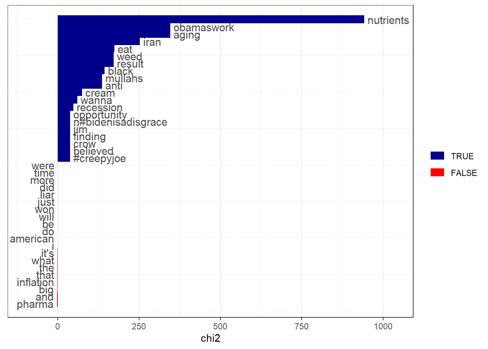
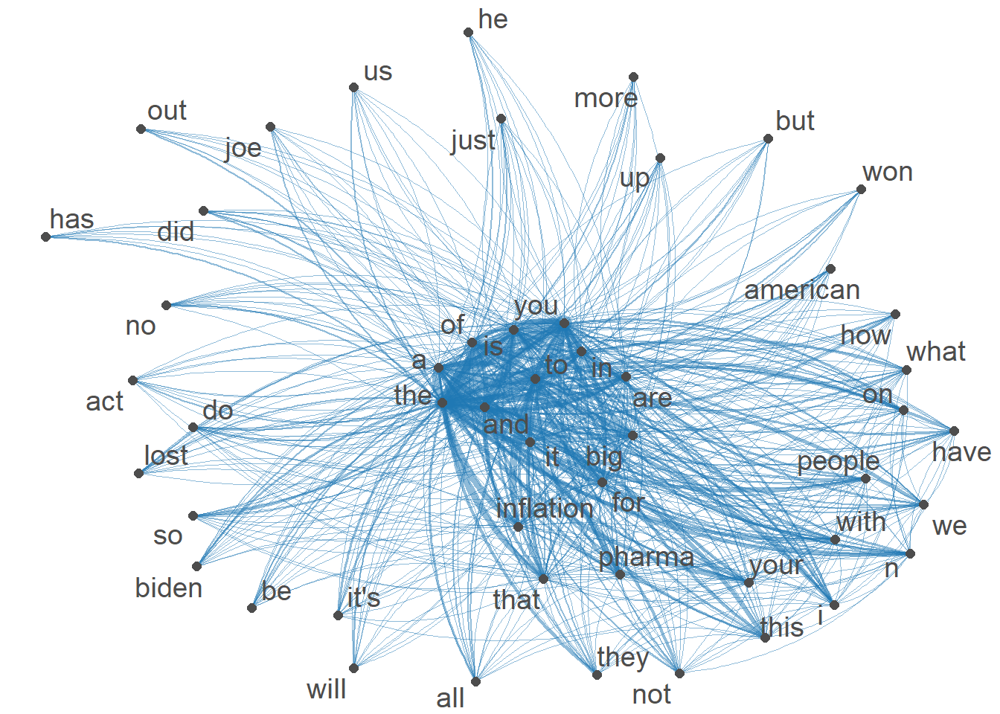

Code
knitr::opts_chunk$set(echo = TRUE, warning = FALSE)Rhowena Vespa
October 16, 2022
Attaching package: 'dplyr'The following objects are masked from 'package:stats':
filter, lagThe following objects are masked from 'package:base':
intersect, setdiff, setequal, unionPackage version: 3.2.3
Unicode version: 13.0
ICU version: 69.1Parallel computing: 8 of 8 threads used.See https://quanteda.io for tutorials and examples.Loading required package: NLP
Attaching package: 'NLP'The following object is masked from 'package:ggplot2':
annotateThe following objects are masked from 'package:quanteda':
meta, meta<-
Attaching package: 'tm'The following object is masked from 'package:quanteda':
stopwordsThis 3rd Blog uses text representation concepts from week 6. Using tweet replies as corpus, I will apply document-feature matrix and term-co-occurence matrix to better undersatnd the relationships of the texts. I will also apply TF-IDF: Term Frequency-Inverse Document Frequency to rank the words by frequency. Data visualization of the semantic network to understand what words co-occur with one another.
New names:
Rows: 9497 Columns: 79
── Column specification
──────────────────────────────────────────────────────── Delimiter: "," chr
(34): edit_history_tweet_ids, text, lang, source, reply_settings, entit... dbl
(18): id, conversation_id, referenced_tweets.replied_to.id, referenced_... lgl
(23): referenced_tweets.retweeted.id, edit_controls.is_edit_eligible, r... dttm
(4): edit_controls.editable_until, created_at, author.created_at, __tw...
ℹ Use `spec()` to retrieve the full column specification for this data. ℹ
Specify the column types or set `show_col_types = FALSE` to quiet this message.
• `` -> `...79`#tokenize and stemming
I played around with this and compared results from keywords :“inflation”, “pharma”, and “price”.
Keyword-in-context with 5 matches.
[text2, 10] see those cheap | price | on my prescript
[text22, 16] the US allow | price | goug. That
[text49, 6] that these lower | price | aren't lower price
[text49, 9] price aren't lower | price | ?? You'r
[text117, 18] HIGH. Gas | price | in CA are #TF-IDF rank words by term frequency
big inflation pharma n people biden lost american
1307 1225 1174 873 822 485 467 456
act will
438 433 #rank words by TF-IDF
inflation big pharma n people biden lost american
1199.1418 1193.4589 1108.9193 1058.6552 901.0779 648.4959 618.0324 611.9988
will act
609.2498 599.6485 #Keyness analysis as an alternative to tf-idf I grouped the responses as based on possible sensitivity of the tweet replies. The possibly sensitive =TRUE replies “keywords” compared to the associations and a reference group of possible_sensitive= FALSE group replies,
IRA_dfm <- tokens(IRA_corpus, remove_punct = TRUE, remove_numbers = TRUE, remove_symbols = TRUE, remove_url=TRUE) %>%
dfm() %>%
dfm_group(groups = possibly_sensitive)
IRAkey <- textstat_keyness(IRA_dfm, target = "TRUE")
textplot_keyness(IRAkey,
show_reference = TRUE,
show_legend = TRUE,
n = 20L,
min_count = 2L,
margin = 0.05,
color = c("darkblue", "red"),
labelcolor = "gray30",
labelsize = 4,
font = NULL
)
[1] "the" "you" "to" "and" "a" "is" #Feature-occurrence matrix of hashtags
Feature co-occurrence matrix of: 6 by 11,231 features.
features
features so when do i get to see those cheap prices
so 119805 172481 222460 433651 143080 1315660 87710 55862 4900 133770
when 0 61776 159808 311521 102784 945130 63008 40130 3520 96096
do 0 0 102831 401790 132568 1218990 81266 51756 4540 123942
i 0 0 0 391170 258420 2376235 158415 100892 8850 241605
get 0 0 0 0 42486 784020 52268 33288 2920 79716
to 0 0 0 0 0 3603315 480615 306110 26850 733005
[ reached max_nfeat ... 11,221 more features ]#Visualization of semantic network based on hashtag co-occurrence
IRAtopgat_fcm <- fcm_select(IRAtag_fcm, pattern = IRAtoptag)
textplot_network(IRAtopgat_fcm, min_freq = 0.5,
omit_isolated = TRUE,
edge_color = "#1F78B4",
edge_alpha = 0.5,
edge_size = 2,
vertex_color = "#4D4D4D",
vertex_size = 2,
vertex_labelcolor = NULL,
vertex_labelfont = NULL,
vertex_labelsize = 5,
offset = NULL)
---
title: "Blog 3- Semantic Network Analysis"
author: "Rhowena Vespa"
desription: "TF-IDF/ dfm/Sematic Network Visualization"
date: "10/16/2022"
format:
html:
toc: true
code-fold: true
code-copy: true
code-tools: true
categories:
- Blog 3
- Rhowena Vespa
- Semantic Network Analysis
- Twitter
- TF-IDF
- dfm
- Text representation
---
```{r}
knitr::opts_chunk$set(echo = TRUE, warning = FALSE)
```
```{r}
library(readr)
library(dplyr)
library(quanteda)
library(quanteda.textstats)
library(quanteda.textplots)
library(ggplot2)
library(DT)
library(tm)
library(stringr)
```
This 3rd Blog uses text representation concepts from week 6. Using tweet replies as corpus,
I will apply document-feature matrix and term-co-occurence matrix to better undersatnd the relationships of the texts.
I will also apply TF-IDF: Term Frequency-Inverse Document Frequency to rank the words by frequency.
Data visualization of the semantic network to understand what words co-occur with one another.
```{r}
# Read in data
IRA<- read_csv("IRA_med.csv")
#remove @twitter handles
IRA$text <- gsub("@[[:alpha:]]*","", IRA$text) #remove Twitter handles
```
```{r}
IRA_corpus <- corpus(IRA,text_field = "text")
```
#tokenize and stemming
```{r}
IRA_tokens <- tokens(IRA_corpus)
IRA_tokens <- tokens_wordstem(IRA_tokens)
```
# Locate keywords in text
I played around with this and compared results from keywords :"inflation", "pharma", and "price".
```{r}
IRA_kw <- kwic(IRA_tokens, pattern = "price*", window = 3,
valuetype = c("glob", "regex", "fixed"),
separator = " ",
case_insensitive = TRUE,
index = NULL)
head(IRA_kw, 5)
```
#TF-IDF rank words by term frequency
```{r}
IRA_dfm <- tokens(IRA_corpus, remove_punct = TRUE, remove_numbers = TRUE, remove_symbols = TRUE, remove_url=TRUE) %>%
tokens_remove (stopwords("en")) %>%
dfm()
topfeatures(IRA_dfm)
```
#rank words by TF-IDF
```{r}
IRA_dfm <- dfm_tfidf(IRA_dfm)
topfeatures(IRA_dfm)
```
#Keyness analysis as an alternative to tf-idf
I grouped the responses as based on possible sensitivity of the tweet replies.
The possibly sensitive =TRUE replies "keywords" compared to the associations and a reference group of possible_sensitive= FALSE group replies,
```{r}
IRA_dfm <- tokens(IRA_corpus, remove_punct = TRUE, remove_numbers = TRUE, remove_symbols = TRUE, remove_url=TRUE) %>%
dfm() %>%
dfm_group(groups = possibly_sensitive)
IRAkey <- textstat_keyness(IRA_dfm, target = "TRUE")
textplot_keyness(IRAkey,
show_reference = TRUE,
show_legend = TRUE,
n = 20L,
min_count = 2L,
margin = 0.05,
color = c("darkblue", "red"),
labelcolor = "gray30",
labelsize = 4,
font = NULL
)
```
# DFM that contains hashtags
```{r}
IRAtag_dfm <- dfm_select(IRA_dfm, pattern = "#*")
IRAtoptag <- names(topfeatures(IRA_dfm, 50))
head(IRAtoptag)
```
#Feature-occurrence matrix of hashtags
```{r}
IRAtag_fcm <- fcm(IRA_dfm)
head(IRAtag_fcm)
```
#Visualization of semantic network based on hashtag co-occurrence
```{r}
IRAtopgat_fcm <- fcm_select(IRAtag_fcm, pattern = IRAtoptag)
textplot_network(IRAtopgat_fcm, min_freq = 0.5,
omit_isolated = TRUE,
edge_color = "#1F78B4",
edge_alpha = 0.5,
edge_size = 2,
vertex_color = "#4D4D4D",
vertex_size = 2,
vertex_labelcolor = NULL,
vertex_labelfont = NULL,
vertex_labelsize = 5,
offset = NULL)
```